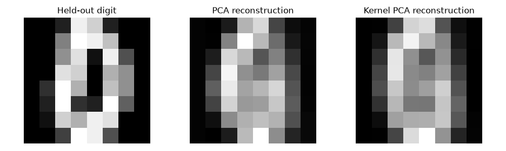

ABHINAV TANWAR · PYTHON ANALYSIS
Digit Manifold Compression
Validation-selected kernel PCA and held-out digit reconstruction.
Scope and methods
Uses the offline sklearn digits dataset. A training/validation/test split isolates kernel gamma selection from test reconstruction scores. Scaling is fitted only on training pixels. Kernel PCA is compared with ordinary PCA using two components and reconstruction in standardized feature space. Reconstructed pixels are inverse-scaled only for visualization. Class labels do not enter the compression transform.
Measured results
| Calculated measure | Value |
|---|---|
| train rows | 1,077 |
| validation rows | 360 |
| test rows | 360 |
| selected gamma | 0.01 |
| validation standardized mse / 0.001 | 0.9115 |
| validation standardized mse / 0.01 | 0.7829 |
| validation standardized mse / 0.1 | 0.8762 |
| pca test standardized mse | 0.6687 |
| kernel pca test standardized mse | 0.7357 |
Reconstruction

Full result structure
{
"train_rows": 1077,
"validation_rows": 360,
"test_rows": 360,
"selected_gamma": 0.01,
"validation_standardized_mse": {
"0.001": 0.9114808096377132,
"0.01": 0.7829042304081734,
"0.1": 0.8762256299541664
},
"pca_test_standardized_mse": 0.668711062022954,
"kernel_pca_test_standardized_mse": 0.7356763153655891,
"scope": "reconstruction in standardized feature space; gamma chosen without test data"
}